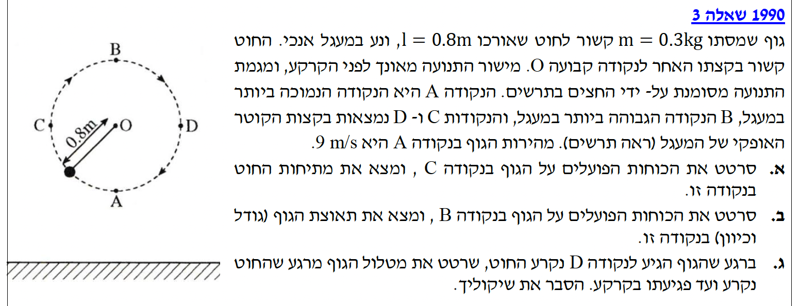
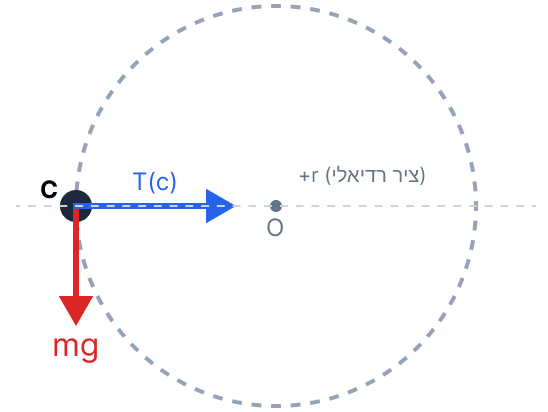
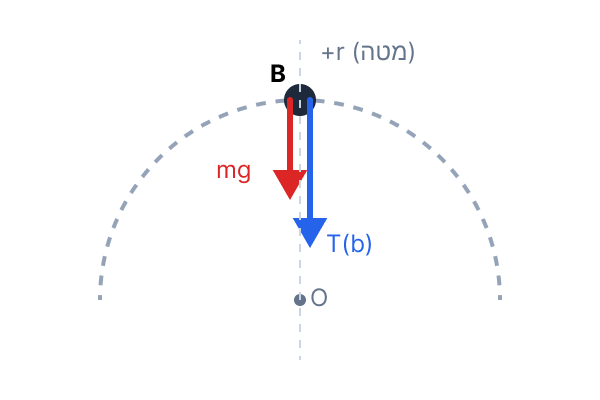
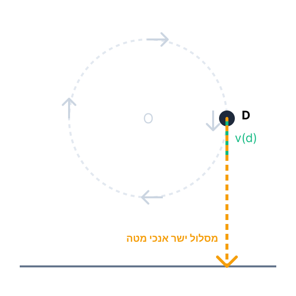

לפני שניגש לסעיפים, ננתח את המערכת: גוף קשור לחוט ונע במסלול מעגלי במישור אנכי. בניגוד לתנועה מעגלית אופקית, כאן כוח הכובד תמיד פועל כלפי מטה, בעוד כיוון המתיחות וכיוון התנועה משתנים. כתוצאה מכך, גודל המהירות של הגוף משתנה לאורך המסלול.
מאחר שאין כוחות לא-משמרים שמבצעים עבודה (כוח המתיחות של החוט מאונך תמיד לכיוון התנועה הרגעי ולכן אינו מבצע עבודה), אנו יודעים שהאנרגיה המכנית הכוללת של הגוף נשמרת לאורך כל התנועה.
א. סרטוט תרשים כוחות הפועלים על הגוף בנקודה C (הקצה השמאלי של הקוטר האופקי).
ב. חישוב גודל כוח המתיחות של החוט (\( T_C \)) בנקודה זו.

כדי למצוא את המתיחות בעזרת החוק השני של ניוטון, אנו חייבים לדעת את גודל מהירות הגוף בנקודה C. נמצא אותה בעזרת עקרון שימור אנרגיה מכנית מהנקודה A לנקודה C.
נגדיר את מישור היחוס לאנרגיה פוטנציאלית כובדית בנקודה הנמוכה ביותר A, כלומר \( h_A = 0 \). לכן, הגובה בנקודה C הוא רדיוס המעגל: \( h_C = l = 0.8 \text{ m} \).
מכיוון שהכוח הלא-משמר היחיד הפועל על הגוף (מתיחות החוט) מאונך תמיד לכיוון התנועה, הוא אינו מבצע עבודה. כאשר אין כוחות לא-משמרים שמבצעים עבודה, מתקיים חוק שימור אנרגיה מכנית:
\[ E_A = E_C \] \[ E_{kA} + U_{gA} = E_{kC} + U_{gC} \] \[ \frac{1}{2}mv_A^2 + 0 = \frac{1}{2}mv_C^2 + mgh_C \]נצמצם במסה \( m \) (המופיעה בכל האיברים) ונציב נתונים כדי לחלץ את \( v_C^2 \):
כעת, נרשום את משוואת החוק השני של ניוטון בציר הרדיאלי (הציר המחבר את C ו-O). נקבע את הכיוון החיובי כלפי המרכז. הכוח היחיד שפועל בציר זה הוא המתיחות \( T_C \). כוח הכובד פועל במאונך לציר הרדיאלי ולכן אין לו רכיב בכיוון זה.
נציב את הנתונים ואת \( v_C^2 \) שמצאנו:
שים לב: בתנועה מעגלית, תמיד כדאי לבחור את הציר הרדיאלי כך שהכיוון החיובי שלו הוא לעבר מרכז המעגל. כך, התאוצה הרדיאלית \( a_R \) היא תמיד חיובית. שים לב גם שאין צורך להוציא שורש כדי למצוא את \( v_C \) עצמו, כיוון שבנוסחת התאוצה הרדיאלית אנו צריכים את \( v_C^2 \)!
הנתונים מסעיף א' תקפים. אנו בוחנים כעת את נקודה B, שהיא הנקודה הגבוהה ביותר במעגל. גובהה מעל נקודת הייחוס A הוא פעמיים רדיוס המעגל: \( h_B = 2l = 1.6 \text{ m} \).
א. סרטוט תרשים כוחות בנקודה B.
ב. מציאת תאוצת הגוף (גודל וכיוון) בנקודה B.

בנקודה B (השיא), כיוון התנועה (המהירות) הוא אופקי. שני הכוחות הפועלים על הגוף – כוח הכובד מטה והמתיחות מטה – מכוונים שניהם לעבר מרכז המעגל. לכן, אין לגוף כוחות בציר המשיקי (ציר התנועה). המשמעות היא שהתאוצה המשיקית היא אפס (\( a_t = 0 \)). תאוצת הגוף הכוללת היא תאוצה רדיאלית בלבד המכוונת כלפי מרכז המעגל (כלפי מטה).
בדומה לסעיף א', מכיוון שאין כוחות לא-משמרים שמבצעים עבודה במערכת, מתקיים חוק שימור אנרגיה מכנית. נחשב את ריבוע המהירות בנקודה B מתוך שימור אנרגיה בין נקודה A לנקודה B:
כעת, נחשב את התאוצה הרדיאלית \( a_R \), שהיא כאמור התאוצה הכוללת של הגוף בנקודה זו:
האם ביקשו את המתיחות? שים לב שהשאלה ביקשה את תאוצת הגוף ולא את מתיחות החוט. תלמידים רבים נוטים "על אוטומט" לחשב מתיחות. כדי למצוא תאוצה אין צורך לדעת את המתיחות, מספיק לדעת את המהירות ואת רדיוס המסלול לפי הנוסחה הקינמטית \( a_R = v^2/r \). אילו רצינו את המתיחות, היינו כותבים \( \Sigma F = mg + T_B = ma_R \) ומשם מוצאים את \( T_B \).
החוט נקרע כאשר הגוף מגיע לנקודה D (הקצה הימני של הקוטר האופקי). על פי החצים בתרשים, מגמת התנועה היא עם כיוון השעון (מ-A ל-C, ל-B, ל-D ושוב ל-A).
א. סרטוט מסלול הגוף מרגע הקריעה ועד פגיעתו בקרקע.
ב. הסבר פיזיקלי לשיקולים שהובילו לסרטוט זה.
החוק הראשון והשני של ניוטון, וקטור המהירות בתנועה מעגלית (משיק למסלול).

כדי לקבוע את מסלול הגוף עלינו לבחון שני דברים ברגע ניתוק החוט (\( t=0 \) של התנועה החדשה): מהירותו ההתחלתית והכוחות הפועלים עליו.
מלכודת קלאסית: הרבה תלמידים מציירים מסלול קשתי (פרבולה) בדומה לזריקה אופקית. זריקה אופקית מתרחשת כאשר החוט נקרע בנקודות העליונה (B) או התחתונה (A) שבהן המהירות אופקית. כאן, בנקודה D, המהירות מופנית הישר למטה ולכן זוהי פשוט "זריקה אנכית מטה". כיוון המהירות ברגע הניתוק הוא ה"מצפן" של התנועה הבאה!